Low-Code and No-Code tools are very popular because you can create apps with a drag-and-drop interface. You don’t need to write the code yourself, the platform will do it for you according to what you drag and drop on the visual builder they provide.
Low-code no-code development is highly popular with startups and other businesses because of this reason. You can build apps quickly and launch ideas early. In this blog, we will talk about everything you need to know about building apps with low-code and no-code platforms and the key differences between low-code vs no-code.
Let’s get started.
What is Low-Code & No-Code Development
In traditional app development, you need a developer to write code for the app to work. This requires you to know about programming languages, code editors, and many other complex tools. No-code and low code are different from this because you can build apps without coding or with minimal code.
No-code is a very approachable type of platform where you can launch your app using the tools provided by the no-code builder.
On the other hand, low-code platforms combine no-code and code to give you the best of both worlds.
No-Code vs Low-Code Platforms: What are the differences?
No-Code Platforms
- Visual tools only : You can build apps using a drag-and-drop interface without writing code.
- Easy to use : Anyone can build apps even if you are not a technical person.
- Pre-built Components : You can create apps using templates already available on the platform.
- Connecting to other tools : You will mostly get ready-made options to connect with other tools like CRMs and ERPs.
- Best for : No-code is best for building MVPs, small to medium projects, and business tools you use internally.
Low-Code Platforms
- Best of both worlds : Low-code platforms give you a visual builder to create your apps, as well as, the ability to write code.
- Easy to customize : Since you can write code, you can customize it according to your needs, and don’t need to depend on just the limited drag-and-drop tools.
- Easy for developers : It is a great option if you need to code, you can easily combine the visual builder and code to make more complex apps.
- Connect to many external tools : You can easily connect your app with external software like CRMs, ERPs, and even custom software.
- Best for : Enterprise projects, large apps, and for custom software solutions.
How Do You Host No-Code Apps?
In traditional app development, you will have to buy server space from cloud providers to host your apps or put them on your own servers. But no-code builders take care of that job for you, you only have to pay their subscription fees. All the technical work you would otherwise have to do yourself will be taken care of by the no code builder. This will save you a lot of time and you will be able to launch your app quickly.
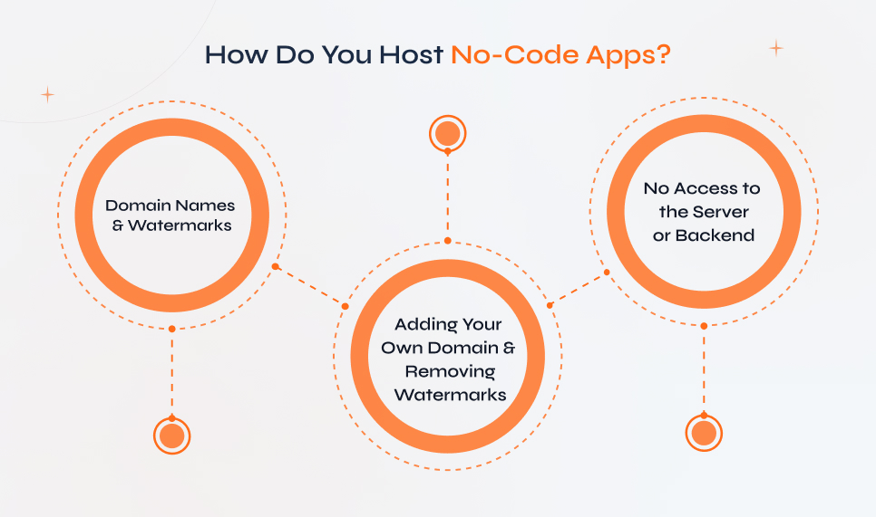
Domain Names and Watermarks
When you publish your app to the web using a no-code builder, you will mostly get either a subdomain link based on the platform’s domain name (example: app.exampledomain.com), or a watermark that shows you are using a free version of their platform. The watermark will also be there on the mobile apps you build, if you are using a free version. The watermark usually looks like a small logo of the platform you are using.
Adding Your Own Domain and Removing Watermarks
Most no-code builders allow you to connect your own domain address to your app. You will have to spend some money to pay for their subscription plans. This will also remove the watermark logo from your mobile apps, depending on the plan that you have selected. Different platforms have different subscription plans and features, so make sure that you spend your money wisely and choose one with the features you need.
No Access to the Server or Backend
No-code tools will not provide you with any access to their servers, even if your app is on there. The technical parts are completely hidden from you, and you can build your apps freely. However, you cannot access the server or backend even when you need to. Which is something to consider when you choose a no-code platform.
How Do You Host Low-Code Apps?
Low-code builders give you a lot of options for hosting your apps. Most low-code builders have built-in hosting features, just like no-code builders. However, they also give you the flexibility to host your apps on any infrastructure you want. This could be from any cloud providers like Amazon Web Services, Microsoft Azure, and Google Cloud. You can also host your app on servers inside your company’s office building (on-premises servers), and a mixture of cloud and on-premises, if you work in regulated markets like finance and healthcare.
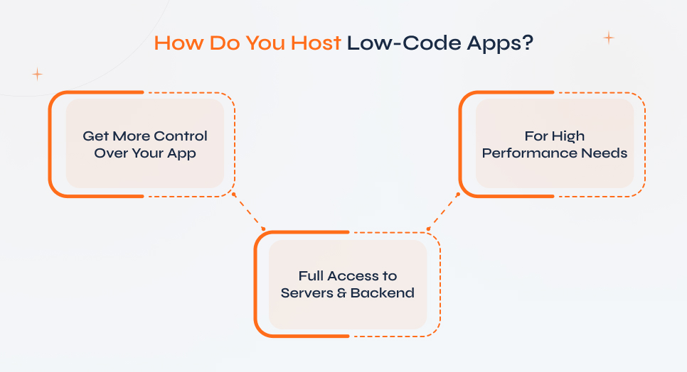
Get More Control Over Your App
Since you can control where you host your app, you can control everything about your app and customize it according to your needs. This allows you to adjust any settings to get better speeds and performance from your app. Scaling your app is also very easy with low-code because of the control you get.
Great Option for High-Performance Needs
Low-code development is a good option for businesses that need high-performance apps because you have so much control over your code and your hosting. If you host your app on a good cloud server or on-premises servers, it will be able to handle heavy traffic and lots of data. This is why many enterprises use low-code app development to build tools and workflows. Many startups that expect rapid growth for their apps also use low-code because of these reasons.
Full Access to Servers and Backend
Low-code development gives you full access to the servers and backend. Since you can choose where your app lives, you can modify the servers according to your needs. The code access you have also allows you to write custom backend logic to add better functionalities to your app.
Managing Databases for No-Code ADomain Names and Watermarkspps
A database is where you store and retrieve data to and from when your apps are running. You can imagine it like a spreadsheet with multiples and columns. No-code apps give you built-in databases and it will be already configured. Good examples are Bubble, Airtable, and Firebase. You can use these databases right away without the extra work of coding.
Customization Options
Since the databases with no-builders are predefined, you can use them but the options for customization are limited. Advanced changes or special types of queries are not available with no-code builders. However, third-party databases that most no-code builders support like Airtable may have additional features that you may be able to use.
No Direct Control Over Database Choice
Flexibility can be a problem with no-code databases because you have to rely on what’s already available. You will not be able to change your database after you have built your app. However, this simplicity could be an advantage for you, if you are a small business or citizen developer (non-technical developer).
Managing Databases for Low-Code Apps
Low-code apps are a great option if you want more control over your databases. Most low-code apps have databases built-on to them, but you can also connect to other popular databases. This gives you a lot of flexibility because you can choose a database depending on what your needs are.
Designing Your Database
Low-code platforms allow you to design your own database structure. Which means that you can curate how to store and organize the data inside the database. This gives you the ability to build a database according to the needs of your app.
Full Control Over Your Database Choice
You are free to choose any databases and how they work for making your apps more efficient. It is also possible for you to control how data is stored and retrieved. If your app deals with large or complex data, this can make it easier for you to manage them.
| Feature | No-Code | Low-Code |
|---|---|---|
| Hosting | Fully managed | Cloud & self-hosted options |
| Database | Built-in, limited customization | Full access, SQL & NoSQL support |
| API Support | Limited, mostly pre-built integrations | Full API access, custom endpoints |
| Customization | No coding, visual only | Can write custom code |
| Security | Platform-managed | Custom security controls available |
| Scalability | Good for small apps, limited scaling | Enterprise-ready, scalable |
Is navigating low-code and no-code development challenging for you?
Let our specialists help you with your project today.
How Do Low-Code and No-Code Platforms Work?
The main thing to remember is that your vision should stay the same, regardless of whether you are using Low-Code vs No-Code. Both Low-Code and No-Code apps run on code, just like any other app in the market. The difference is that you can build your app with visual builders, and the platform will generate the right code for it automatically. Most businesses use No-Code tools to build either a minimum viable product (MVP) or internal tools their teams can use. On the other hand, low-code builders are more suitable for small to medium projects.
No-Code App Development Process
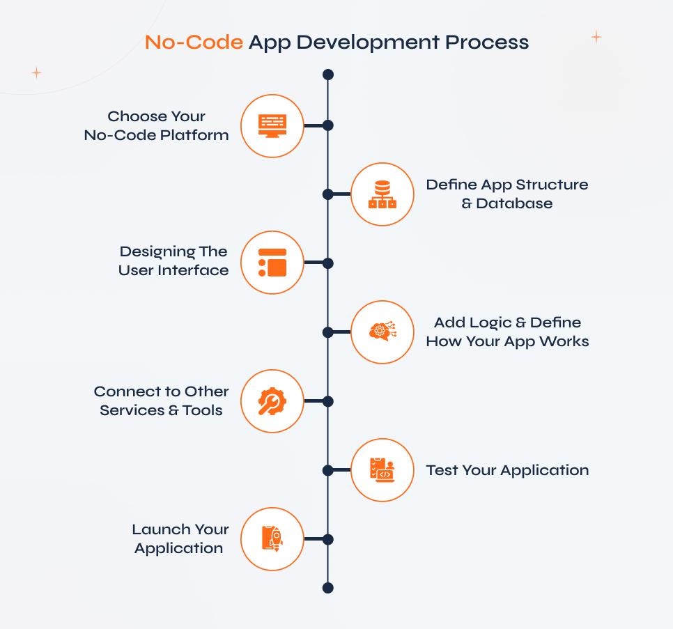
Step 1: Choose Your No-Code Platform
- The first step is to choose the no-code tool you want to use.
- Some examples are Bubble, Webflow, Adalo, and Glide.
Step 2: Define App Structure and Database
- You can use the templates already available or begin from scratch.
- Set up the fields for data like user profile information, product information, etc., for your app.
Step 3: Designing The User Interface
- You can use the drag-and-drop UI builder to design your user interface.
- No-code builders usually have pre-built components like buttons, forms, and menus.
Step 4: Add Logic and Define How Your App Works
- Here, you can create rules for how your app will work when someone uses it.
- This can be things like what happens when a user fills and submits a form, or what happens when someone uses a particular button.
Step 5: Connect to Other Services and Tools
- Connect services like payments or maps using the no-code builder’s built-in tools and features.
- Most no-code app builders support popular tools like Salesforce, Google Sheets, etc.
Step 6: Test Your Application
- Use the preview function to view and use your app, and find any issues while using it.
- Many no-code builders give you basic error logs with explanations on what the error is about. Which can help you solve bugs faster.
Step 7: Launch Your Application
- From here, you can either publish your app to the web using the platform’s built-in tools. Most no-code platforms have one-click publishing features.
- If you have a mobile app, you can publish it directly to app stores easily.
Low-Code App Development Process
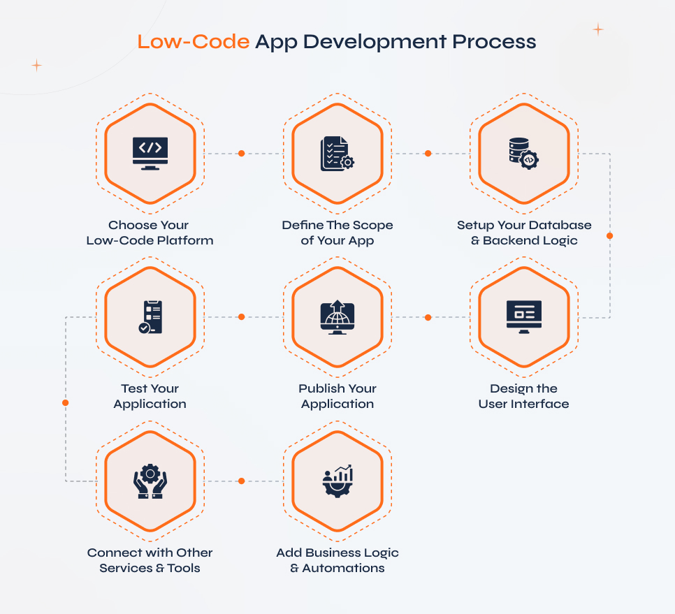
Step 1: Choose Your Low-Code Platform
- The first step is to choose a low-code platform that suits your needs.
- Some popular platforms are Mendix, OutSystems, FlutterFlow, and Appian.
Step 2: Define The Scope of Your App
- Select the platform for launching your app like mobile, web, or desktop.
- Decide on who will use the app like consumers, enterprises, or small businesses.
Step 3: Setup Your Database and Backend Logic
- Select a database that suits your app’s needs and define how data will be stored and organized.
- Then you can add the rules of how your app will work. Here, you can either use the visual builder, or edit the code for more control.
Step 4: Design The User Interface
- You can speed up the process of designing your UI using the low-code platform’s visual builder.
- Additionally, you can write code if you want to customize the way your app looks further.
Step 5: Add Business Logic and Automations
- Here, you can add more complex functionalities to your app like automatically sending emails to customers or sending notifications periodically.
- For adding these complex functions, you can write custom code and make your apps more optimized.
Step 6: Connect with Other Services and Tools
- It is easy to write code for connecting your apps with external services in low-code vs no-code.
- They also give you built-in tools for popular software like HubSpot, JotForms, etc.
Step 7: Test Your Application
- You can use the preview function and built-in tools to test your app and find any bugs.
- Low-code also allows you to do automated testing like traditionally-developed apps, if you have a professional with you.
Step 8: Publish Your Application
- Select the hosting options for your application to run on.
- Here, you get options like cloud hosting, private servers, and on-premises servers (physical hardware servers inside your organization)
How to Approach Designing The User Interface (UI) for Your Application
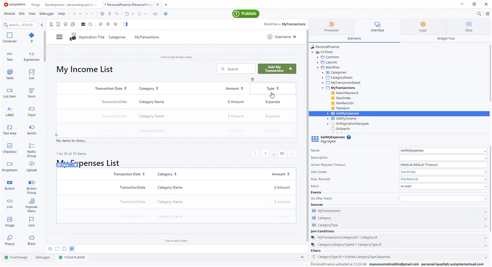
Both no-code and low-code platforms give you visual tools for building your user interface or UI. Most platforms have a simple drag-and-drop interface for this, but different platforms can have different levels of complexity. But these tools make it much easier for you to design your UI. Especially in the case of low-code, you can make the process much faster while maintaining customizability because you can combine visual tools and custom code.
Designing Apps With No-Code Builders:
You can easily design your user interface using premade components like buttons, images, and more. Even non-technical or business users can use these tools to create very attractive UIs. Since everything is visual, you can play around with the components until you get the look you want. The only downside is that you can’t do more complex designs that go beyond the capabilities of the visual builder.
Many modern no-code builders have adopted a design-focused look to their visual builders. If you look at platforms like Webflow, Dora, and Plasmic, you can see that they look similar to design tools like Figma. This makes it simple for you to change colors, fonts, and layouts quickly. It also makes it more approachable because you are not overwhelmed with too many options as in low-code vs no-code.
Designing Apps With Low-Code Builders:
Low-code development combines the power of no-code and code, giving you simple drag-and-drop tools to design your UI, while allowing you to write code to refine it. You can use the premade components to get started quickly and build a good layout for your app. Then you can add custom code to make them more attractive and professional.
Just like no-code builders, low-code builders have also moved towards making their visual tools look similar to design tools like Figma. The code editors inside low-code platforms are also much more simplified, when you compare them to traditional code editors that engineers use like VS Code. However, you still get the ability to download your code and get an engineer to develop it further, if you want more control.
Can You Integrate AI Into Your Low-Code/No-Code Apps?
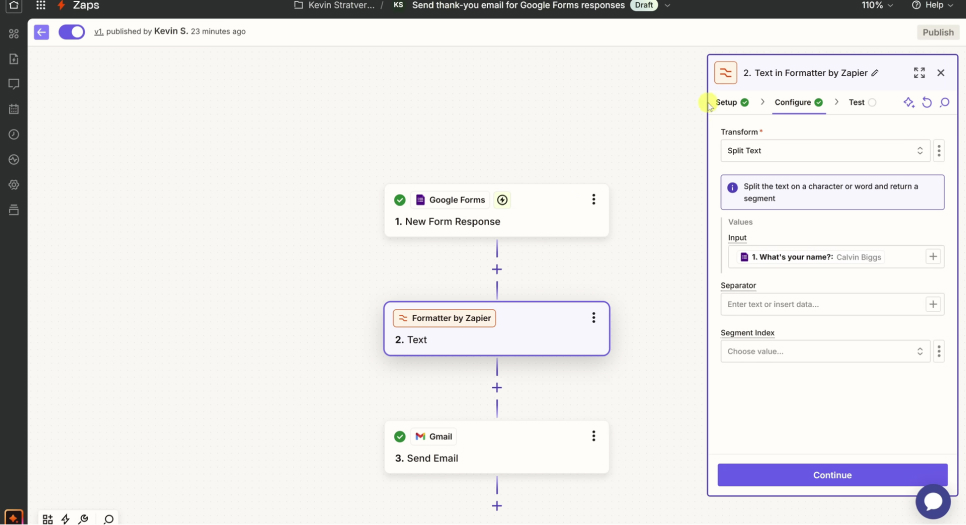
It is possible to add AI features in low-code/now-code development, the level of customization would be a bit different. As you can imagine, if you want to add more complex AI features, you would need to go the low-code route. That would give you much more flexibility and control. Let’s break them down individually and see what the differences are for low-code vs no-code.
AI Support for No-Code Apps
- Most modern no-code builders have AI features built-in.
- For example, you can find LLMs like ChatGPT and Claude on many no-code platforms.
- You don’t need to write any code, it’s usually a simple process with a few steps.
- But keep in mind that if you use an AI provider like ChatGPT, you would need to pay them fees to use their APIs.
- You can easily enable AI features this way and build AI apps and features like chatbots, simple recommendation systems, text summarization, etc.
- The customization ends there because you can’t write code but you can find some workarounds if you use automation platforms like Zapier or Make.
AI Support for Low-Code Apps
- Most low-code platforms also come with AI features but you also get the flexibility to write code for advanced things.
- In this approach, you can virtually add support for any AI model and select the solution that’s right for you.
- Some platforms like OutSystems have very powerful AI features and capabilities to add custom AI features to your app, even for enterprise use cases.
- Here, you get the convenience of using visual builders for quick app development while allowing you to write code for custom AI functionalities.
- Many enterprises opt for low-code for this reason because it is very easy to scale.
- If you’re using LLMs like ChatGPT and Claude for this, then you will need to pay for their API usage.
How Do Businesses Benefit From Low-Code/No-Code Development?
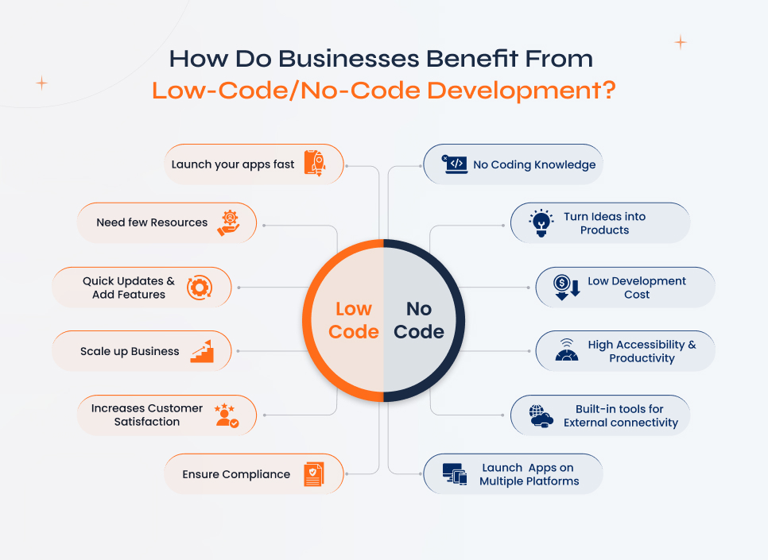
Key Benefits of Low-Code
- Build and launch your apps very fast.
- Saves money because you need fewer resources
- Helps IT and business teams collaborate better.
- You can meet customer demands faster by rolling out updates quickly.
- Build apps that can scale along with your business growth with low-code vs no-code.
- Fast fixes for problems and updates increases your customer satisfaction and experience.
- Built-in tools to ensure compliance with regulations.
- Easily add new features as technologies evolve.
Key Benefits of No-Code
- You can build apps easily even without coding knowledge or experience.
- You can turn your ideas into working prototypes and products quickly.
- Lowers your development cost with pre-built templates and components.
- The high accessibility encourages innovation from everyone.
- Easily automate routine takes and improve your workflows, which enhances productivity.
- Built-in tools to connect your app with external services like tools and AI models.
- Build once and launch your app simultaneously on multiple platforms like web, mobile, and desktop.
Build scalable apps with low-code and no-code
Book a call with our expert to take the first step
Are There Any Challenges With Low-Code/No-Code Development?
Just like everything like live, low-code and no-code development are not perfect. To be fair, even traditional programming has its caveats, and low-code/no-code builders are just programming tools where the code is automatically generated. But as businesses and citizen developers, it is important to understand these trade-offs so that they don’t affect the outcomes of your apps.
Challenges with No-Code Platforms
- You can only use premade templates and tools.
- It is very hard to add complex features since you can’t write code.
- Although it simplifies the process of building apps, there is still a learning curve, especially if you are very new to technology.
- No-code is great for small projects, and even some medium projects but scaling beyond that is very hard.
- Integrations are limited to built-in tools and simple third-parties.
- You have to completely rely on the no-code platform’s features and updates, and have no control over it.
Challenges with Low-Code Platforms
- Dealing with auto-generated code and custom code can be challenging, especially for users with less experience with coding for low-code vs no-code.
- Developers sometimes resort to shortcuts and quick fixes for faster development, which can cause problems in the future.
- It is important to choose a low-code platform that aligns with your regulatory needs because some platforms may not comply with regulations like HIPAA, GDPR, etc.
- Since low-code is a combination of no-code and code, beginners can find the learning curve to be very steep.
Who Can Benefit From Low-Code and No-Code Development?
Low-Code
- Enterprises looking for faster development.
- Startups that want to balance budget with functionality.
- Startups that have crossed the MVP stage.
- Businesses looking to build AI solutions quickly.
- Cross-functional teams of non-technical and technical members.
No-Code
- Solo-entrepreneurs and small businesses.
- Non-technical founders looking to test out ideas.
- Teams looking for rapid prototyping and MVP development.
- Team within an organization that wants to build simple tools and workflows for better productivity.
- Projects on an extremely tight budget.
Top 5 Low-Code/No-Code Platforms in 2026
Low-Code App Development
1. OutSystems
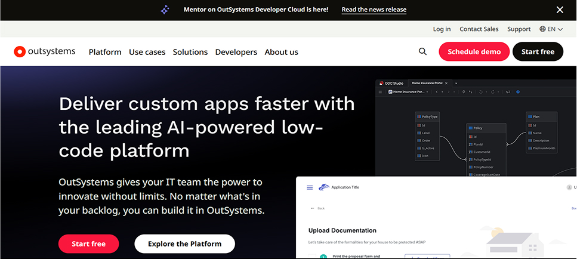
OutSystems development is popular for building enterprise-grade applications with strong AI features and custom coding tools. It is known as a high performance low-code app builder.
- Supported Platforms: Web, Mobile (iOS & Android)
- AI Integration: Built-in AI features, full API support & customization.
- Year Launched: 2001
- Number of Users: 1.5 million+
- Developer: OutSystems
2. Mendix
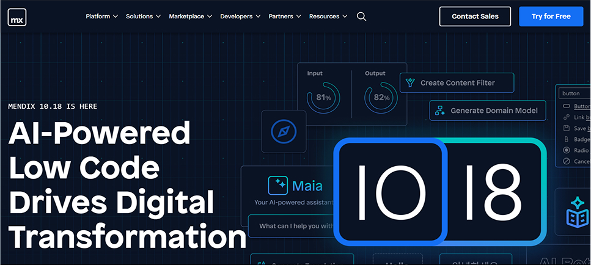
A cloud-based low-code platform that allows you to build applications for the web and mobile quickly. Mendix has strong AI features for automation and gives you the ability to use multiple cloud solutions at the same time.
- Supported Platforms: Web, Mobile (iOs & Android)
- AI Integration: Built-in AI features, full API support & customization.
- Year Launched: 2001
- Number of Users: 250,000+
- Developer: Mendix (Siemens)
3. Microsoft Power Apps
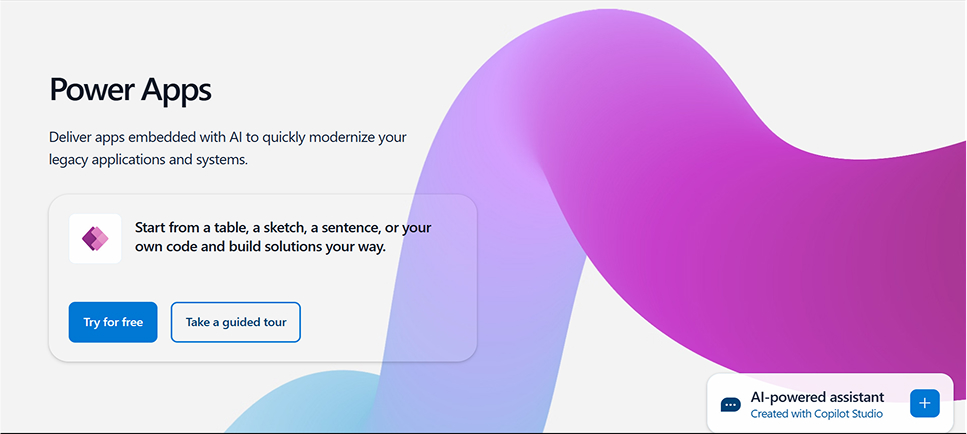
Microsoft’s own low-code platform that integrates with existing tools in the ecosystem like Microsoft 365, Azure, and Dynamics. It has powerful AI features and is suitable for businesses already using the Microsoft ecosystem.
- Supported Platforms:
- AI Integration: Native support for Azure AI, custom AI builder.
- Year Launched: 2016
- Number of Users: 10 million+
- Developer: Microsoft Corporation
4. Appian
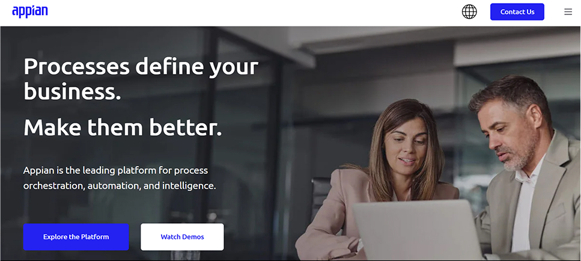
It is a low-code platform that focuses on business process management and automation, helping enterprises make their workflows better, add AI features to their apps, and create scalable applications quickly.
- Supported Platforms: Web, Mobile (iOS & Android)
- AI Integration: Built-in AI features, full API support & customization.
- Year Launched: 1999
- Number of Users: 1,000 Enterprises
- Developer: Appian Corporation
5. Zoho Creator
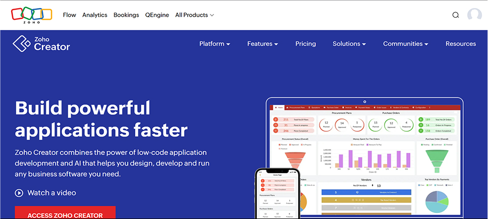
It is a low-code platform that aims at helping businesses build custom applications with minimal coding. It has drag-and-drop features, automation tools, and analytics tools built-in to make your development process easier.
- Supported Platforms: Web, Mobile (iOS & Android)
- AI Integration: Built-in AI features, API support.
- Year Launched: 2006
- Number of Users: 13 million+
- Developer: Zoho Corporation
No-Code App Development
1. Bubble
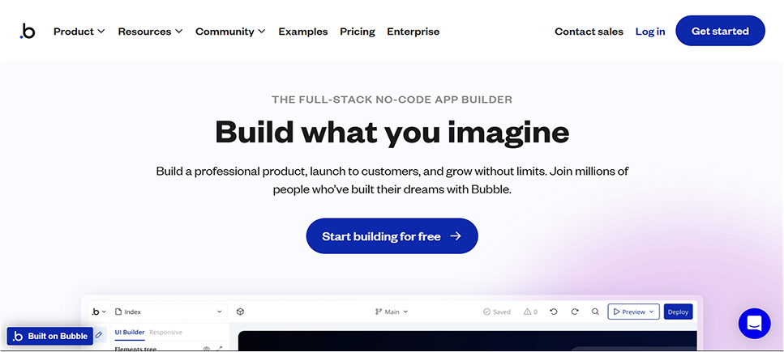
A widely used no-code app builder that allows users to create web applications without any coding knowledge. It has a drag-and-drop interface, custom functionalities with APIs, and you can also create mobile apps using external wrappers.
- Supported Platforms: Web, Mobile (using wrappers)
- AI Integration: Built-in Integration with AI models like GPT-4 and Claude.
- Year Launched: 2012
- Number of Users: 1 million+
- Developer: Bubble Group, Inc.
2. Adalo
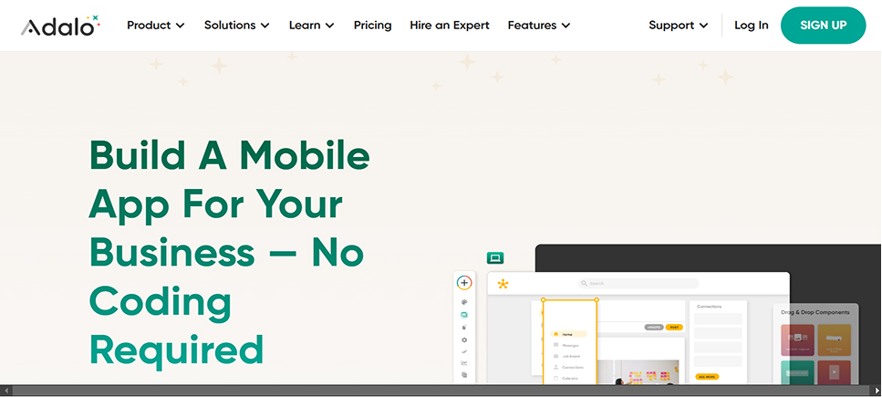
A no-code app builder that specifically designs for creating web and mobile apps quickly. It also has a drag-and-drop interface and is best suited for individual entrepreneurs and small businesses looking to launch products fast.
- Supported Platforms: Web, Mobile (iOS & Android)
- AI Integration: AI integration through APIs.
- Year Launched: 2018
- Number of Users: 250,000+
- Developer: Adalo, Inc.
3. Retool
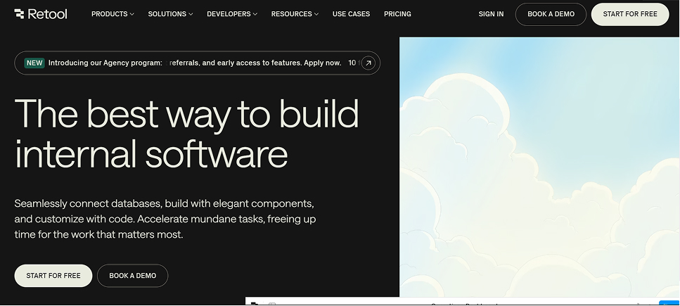
A no-code platform that’s specifically made to create internal workflows for businesses. It is aimed at businesses looking to improve their processes by building tools themselves without code.
- Supported Platforms: Web
- AI Integration: AI Integration through APIs
- Year Launched: 2017
- Number of Users: 500,000+
- Developer: Retool, Inc.
4. Webflow
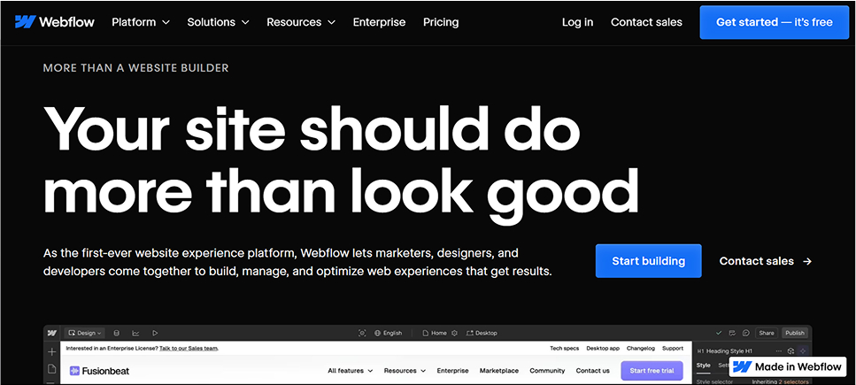
A powerful no-code tool for web design and development, with useful CMS and e-commerce features. Webflow is popular for building business websites, e-commerce platforms, and simple web apps.
- Supported Platforms: Web
- AI Integration: AI Integration through APIs
- Year Launched: 2013
- Number of Users: 3.5 million+
- Developer: Webflow, Inc.
5. Glide
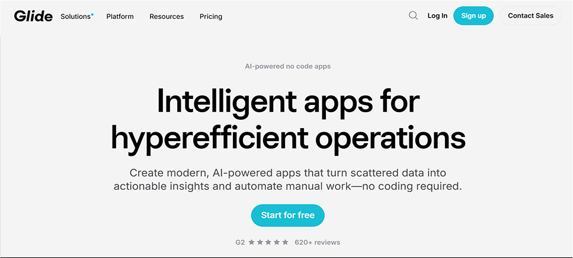
Glide is a noc-de platform that allows you to store your data on Google Sheets and build applications based on that. It has pre-made templates and the ability to integrate with the cloud.
- Supported Platforms: Web, Mobile (iOS & Android)
- AI Integration: AI Integration through APIs.
- Year Launched: 2018
- Number of Users: 5000,000+
- Developer: Glide Apps, Inc.
Pro Code Vs Low Code-No Code: What’s a Better Fit?
In addition to low-code and no-code development, there’s a traditional way of building software where developers write everything using full-scale languages titled “Pro code development”. It gives complete control over the architecture, performance, security and customization. With this, you can build anything exactly the way you want without any limitations.
However, when you compare pro code, low-code/no-code platforms trade flexibility for speed. They actually help teams build faster apps using visual components and prebuilt logic, but with certain limitations.
What’s Best? : After a detailed comparison, if your project demands deep customization, advanced logic, or enterprise-level scalability, opt for pro code development. On the other hand, if you need to launch simple tools, automate workflows, or prototype ideas quickly, low-code/no-code helps you move faster without heavy engineering effort.
Why Choose Us For Low-Code/No-Code Development?
Building apps can be tricky even if you use platforms like no-code and low-code. We help you take the mystery out of development with our industry expertise working with traditional development and low-code no-code development. Our team will also guide you throughout your product development process, addressing your challenges, and using your strengths to your app’s advantage.
How We Help
- Deep industry expertise and knowledge.
- Proficiency in Mendix, Appian, Zoho Creator, and OutSystems development.
- A strong team of 100+ engineers to make your project a breeze.
- Partnerships with industry-leading tools and service providers.
- Expertise in design, development, and infrastructure management.
- Consistent support from people can understand your vision.
- Tailored solutions that align with your vision.
Conclusion
Low-code/no-code app development is revolutionizing the way we look at software development and helping us build products faster. It’s clear that low-code and no-code builders aren't a replacement for custom coding. However, these tools allow businesses and individuals to turn their ideas quickly into functional apps and speed up their time-to-market.
It is flexible and easy especially for startups and solo-entrepreneurs because they can validate their ideas without facing huge overheads. But it's always important to take your specific situation into account when choosing low-code vs no-code and pick a platform that aligns with your goals.
If you are struggling to build your product with low-code/no-code tools, book a consultation with our expert and get started today.